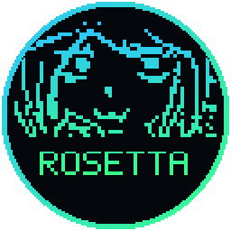

Roland mods and synth mods: Rosetta OS
Free, open-source custom firmware, sample ROMs and tools for vintage Roland gear (D-110, D-70, PRO-E, GP-16, OCTA-CAPTURE, SP-808, VS-840EX, U-110) and more: Akai S2000, Casio SK-1, Kurzweil 1000, Sony HR-GP5, Yamaha PSS-270 and TC M-One. No factory code is shipped: the tools patch your own ROM dumps. Talk to us on Discord.
Roland mods
Roland D-110 mod: Rosetta OS
Custom OS with arpeggiator, step sequencer, MIDI out, MIDI CC knobs, wave sequencing, mod matrix, unison, glide and chords.
Tested on hardwareRoland D-110 custom samples
Swap the PCM mask ROMs for flash and load your own sounds. Record on your PC, burn, play.
Works on hardwareRoland D-70 mod: Rosetta OS
Live synth pages, new effects on the effects chip (drive, bit crush, decimator, rectifier, resonant filters), custom U-110 cards and a keyboard fix.
Tested on hardwareRoland PRO-E mod: Rosetta OS
Juno mode, arpeggiator, Juno PWM, resonant filter, Juno chorus on the reverb chip, your own long samples and styles from MIDI files.
Tested on a real PRO-ERoland GP-16 mod: Super GP-16
60 pedal and 12 amp voicings, real knob names, live 0-10 knobs, pedalboard and rig modes, cab sims. Drop-in flash chip, no wires.
Roland OCTA-CAPTURE mod (UA-1010)
Rosetta boot screen, channel strip (EQ, tube, comp) on all 8 inputs, a guitar amp in the unit's own DSP, and the Rosetta Octa Control PC editor.
On hardwareRoland SP-808 mod: looper OS
Turns the SP-808 Groove Sampler into a guitar looper and MPC-style sampler. Installs from a Zip or ZuluIDE SD card.
Roland SP-808 Disk Studio
SP-808 / SP-808EX Zip disk tool: export pads as WAV, import your own WAVs, install firmware. R-DAC codec reverse engineered.
Roland VS-840EX mod: Rosetta OS
Sampler, looper and synth conversion for the VS-840EX, ported from the SP-808 Rosetta OS.
Roland U-110 custom sample cards
Free Windows app that builds SN-U110 format PCM cards from WAV files, with a loop editor and U-110-accurate preview.
Other synth and sampler mods
Akai S2000 mod: Rosetta OS
Reverb, echo and reverse delay without the EB16 board, live input FX, a synth rompler and MPC-style menus. Boots from a Gotek.
Tested on hardwareCasio SK-1 mod: custom sample ROM
Replace the preset ROM with an EEPROM and load your own sounds from WAVs or Akai/Roland sample CDs, with custom loops.
Works on a real SK-1Kurzweil 1000 (K1000) mod
Custom samples for the 1000 GX: K1000 Studio turns WAVs into wave ROMs and new patches, factory sounds stay.
Hardware test in progressSony HR-GP5 / HR-MP5 mod
Rosetta OS custom firmware with a 15-voice polyphonic MIDI synth on the TMS57002 DSP and new menus.
Tested on hardwareYamaha PSS-270 mod: Mega DX
An Arduino Mega + ESP8266 takes over the YM2413 FM chip and keys: MIDI in/out, arpeggiator, live FM tone editor, WiFi updates.
TC Electronic M-One mod
An ESP32-S3 loads new DSP programs into the DSP56362 over its debug port and drives a colour screen.
Tools
Akai CD ISO Maker
Build, read, edit and export Akai S1000/S2000/S3000 sampler CDs from WAV/MP3/FLAC. WAV/SFZ/SF2 export.
Hardware-untestedESP32 mask ROM programmer
An ESP32-S3 that writes 512 KB images into an SST39SF040 flash chip over USB or WiFi. Built to burn U-110 cards.
Cintiq Companion Hybrid Linux
Boot real Linux on the Wacom Cintiq Companion Hybrid (DTH-A1300) through the recovery slot, Android untouched.
Glitch Lab
A lo-fi glitch painting app with pen-pressure glitch brushes and glitch filters.